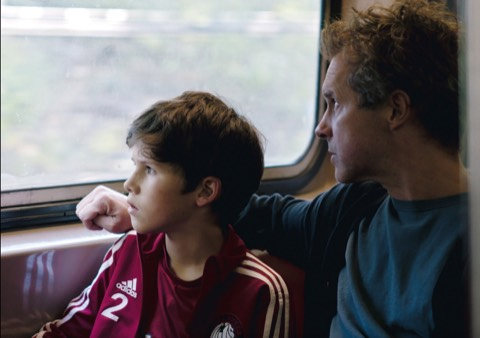

Panel · DX² · Double Exposure 2024
Personal Stories, Universal Impact: The Power of Investigative Filmmaking
Friday, November 8, 2024 · 10:45 AM–11:55 AM · The Johns Hopkins University Bloomberg Center
This panel takes a fresh look at how filmmakers use personal stories to create investigative films that dive deep into hidden truths, illuminating larger societal issues. By focusing on individual experiences, these filmmakers create emotionally resonant narratives that connect with audiences on a human level while shedding light on critical topics. Join a discussion with filmmakers as they share their approaches to investigating and crafting compelling personal stories that inspire change and provoke reflection.
Recording
Films discussed

Fox Chase BoyGerad Argeros, Kaya Moon Dillon2024 · 27 min Searching for AmaniNicole Gormley, Debra Aroko2024 · 80 min
Searching for AmaniNicole Gormley, Debra Aroko2024 · 80 min A Shot at HistoryErika Cohn2024 · 24 min
A Shot at HistoryErika Cohn2024 · 24 min Mistress DispellerElizabeth Lo2024 · 94 min
Mistress DispellerElizabeth Lo2024 · 94 min
Sources
Related sessions
- 2024 · Thu Nov 7 · 1:30 PMPanel · DX²Cross Country: Unpacking Regionalism in Documentary FilmmakingAaron Asbury, Laura Deutch, Ryan Pearson, Ouida Washington, Nick Price
- 2022 · Sat Oct 15 · 10:00 AMWorkshop · DX²The Art, Craft and Heart of a Great PitchJudith Helfand
- 2022 · Sat Oct 15 · 1:45 PMWorkshop · DX²For Print Journalists: Beyond the PitchBrian Collister, Doug Blush, Erica Berenstein
- 2021 · Thu Oct 14 · 4:00pmWorkshopThe Art, Craft and Heart of a Great PitchJudith Helfand
- 2021 · Fri Oct 15 · 1:00pmPanelFilming the Near ImpossibleJoshua Glick, Matthew Heineman, Jimmy Chin, Elizabeth Chai Vasarhelyi, Seth Freed Wessler, Antonio Méndez Esparza, Dana Green
- 2019 · Thu Oct 10 · 9:30 AMPitchDX Access / Pitch
- 2018PitchDX Pitch
- 2015 · Fri Oct 2 · 11:00 AMPanelStorytelling on the Cutting EdgeWendy Levy, Brian Boyer, Francesca Panetta, Nonny de la Peña, Michael I. Schiller